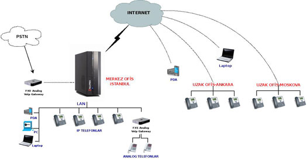
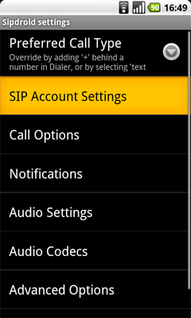
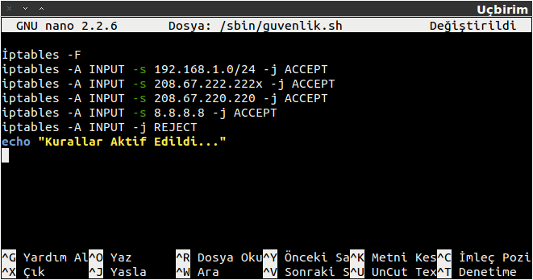

Giriş
Bu ay inceleyeceğimiz konu daha çok kurumlara yönelik olacak. Özellikle son birkaç yılda hızla yaygınlaşmaya başlayan bu teknolojiyi incelerken beraberinde gelen güvenlik zorunluluğundan bahsedeceğiz. Neden zorunluluk derseniz, maliyet açısından çok mantıklı bir teknoloji olmasına rağmen, eğer güvenlik altına alınmaz ise saldırganlar yüzünden çok ciddi maddi zarara uğranılmasına neden olabilir, hatta bunun için saldırganları tahrik eden bir yapıya sahiptir.
IP Santral (IP PBX)’in kısaca ne olduğuna, neler yapabileceğine ve ne gibi tehlikelere açık olduğundan bahsedeceğiz ama bundan önce vurgulamak istediğim bir nokta var.
2008 yılının başında başladım IP Santraller ile ilgilenmeye. Uzun sayılmayan bu mazimizde değişik tecrübeler yaşadık; fakat ilk aldığım ders Linux çekirdeğini kullanan dağıtımların diğer işletim sistemlerine nazaran sesi çok daha iyi işlediğiydi. Farklı işletim sistemleri üzerinde yaptığımız denemeler başarısızlıkla sonuçlandı. Tabii bizim çalışmamız bir kıstas değildir, fakat başarılı olan bütün ürünler GNU/Linux dağıtımlarında çalışmaktadır.
Bu işi en iyi şekilde yerine getiren ve dünyanın dev firmalarının ücretli ürünleri ile rahatlıkla yarışabilen ‘Asterisk’ tabanlı IP Santraller.
“Nedir bu IP Santral? Normal santrallerden farkı neymiş bunun? Bizim zaten santralimiz var, ne yapalım biz IP Santral’i?” gibi sorular yükseliyor, sesleri duyar gibiyim, merak etmeyin kısa kesip anlatmaya çalışacağım.
Yıllardır alışık olduğumuz PBX santrallerin başına IP (İnternet Protokolü) eklenmesi ile bir devrim gerçekleşti ve bu devrim, bize aşağıda okuyacağınız yenilikleri kazandırdı.
IP Santraller, bilgisayar tabanlı santrallerdir. Asterisk, GNU/Linux üzerinde çalışır, dolayısıyla bilgisayar üzerinde çalışan bir servisten ibarettir.
Önce alt yapı (zayıf akım) olarak olaya bakarsak, daha firma kurulurken bile ‘telefon kablosu’ çektirmenize gerek yoktur. yerel ağınız üzerinden çalıştığı için ayrı bir kablolama maliyeti çıkarmaz, bu durumda, şirkette bir odadan başka bir odaya taşınırken bile telefoncu çağırıp telefon hattınızı diğer odaya aktarmasını isteyip servis ücreti ödemezsiniz. Telefonunuzu fişinden ve ağ kablosundan çıkarıp, istediğiniz odaya geçip tekrar elektrik ve ağ kablosunu takmanız yeterlidir. IP Telefon açılırken sistemden IP alacak ve ağınızdaki IP Santral’i görüp dahili numarası ile kayıt olacaktır, kullanıma hazırdır bile.

Buradaki mantığa göre, IP telefonunuzun aldığı bir IP adresi var, İnternet tarayıcıya telefonunuzun IP adresini yazarak telefona bağlanıyorsunuz ve ayarlarını yapıyorsunuz. IP Telefonun IP Santral’e bağlanabilmesi için, IP Santral’inizin yerel ağınızdaki IP adresini telefon ayarlarına yazarak, telefonun IP Santral’e bağlanmasını sağlıyorsunuz.
Ya dış IP yazarsak?
Peki bir de olaya şu açıdan bakalım: İşten çıktım, eve gittim ve Adsl modemimden çıkan ağ kablosunu yanımda getirdiğim IP Telefon’a bağladım. Telefon modemden bir IP aldı, ama evimde IP Santral olmadığı için IP Telefon hiçbir santrale bağlanamadı, dolayısıyla çalışmıyor, arama yapmıyor. Tekrar telefonumun ayarlarına girmek için modemden aldığı IP adresini İnternet tarayıcımın adres çubuğuna yazıyorum ve ayarlar menüsüne ulaşıyorum, bu sefer IP Santral’in yerel IP adresini silip şirketin dış IP adresini yazıyorum ve kaydedip çıkıyorum. IP Telefon bu sefer açılırken dış IP adresinden santrale ulaşarak kayıt olmak istiyor ve eğer şirkette böyle bir yönlendirme var ise IP Telefon, IP Santral’e ulaşarak kayıt yapıyor ve kullanılabilir hâle geliyor.
Gördüğünüz gibi evimdeyim ama şirkette kullandığım telefonu eve getirip sanki şirketteymişim gibi kullanabiliyorum ve şirketteki bütün dahili telefonlarla aramdaki görüşmeler ücretsiz oluyor. Eğer dış arama yaparsam bu konuşma şirket hatları üzerinden çıkıyor. Bunu uzak şubeli şirketler için düşünürsek, “devrim” derken ne demek istediğimi anlatmış olurum sanırım.

Uluslar arası şubesi olan firmalar için de aynı durum geçerlidir. Tek santral üzerinden bütün şubeleri yönetebilir ve şubeler arasındaki görüşmeler için %100 kazanç sağlayabilirsiniz.
Şu an’a kadar aslında sadece bir özelliğinden bahsetmiş olduk, başka bir açıdan bakarak aynı özelliğin kullanım alanını genişletmek açısından başımdan geçen bir olayı anlatmak istiyorum.
Yıllar önce (Bir önceki yazıda da “yıllar önce” örneğini verdim sanırım, beni yaşlı sanmayın, daha otuzumdayım. :) ) birçok firmaya Bilgi Teknolojileri adı altında danışmanlık ve destek veren bir firmada çalışıyordum. X firmasına IP Santral kurulumu yaptım ve gayet güzel çalışıyor, bir sorun yok. Fakat ilgi odağımız mermer ocakları olan firmalar olduğu için müşteriler ile sürekli diyalog hâlindeyim, çünkü her açtığı mermer ocağına teknoloji taşıyorum. Evet, bildiğiniz taşıyorum, tabi öyle sırtlayıp taşımıyorum adı üstünde teknoloji, ama kablosuz olarak taşıyorum. 1. tekil kişi ekine aldanmayın, bunlar ekip işi.
IP Santral’i kurduğumuz firma bizimle irtibata geçiyor ve beraber yeni ocaklarına gidiyoruz. Mermer ocağı taaa dağın başında, artık rakım kaç bin bilmiyorum; ama normal araç çıkamıyor, biz de iş makinesi ile çıktık. Firma açısından baktığınızda, şehirden kilometrelerce uzakta, yerden kilometrelerce yüksekte bir dağın tepesinde iş yapıyor. Tabii bırakın İnternet’i, telefonu yukarı su çıkarmak için kepçe kullanıyorlar.
Biz uygun bir yerden bize en yakın köyü (5-30, olmadı 50 km arası) gözümüze kestiriyoruz ve köye gidip dağı güzel gören ev, okul ya da camiden izin alıp oraya İnternet bağlatıyoruz, gelen İnternet’i kablosuz olarak dağa doğru yayınlıyoruz. Noktadan noktaya iki cihazla gerçekleşen bu bağlantıda sonuç olarak İnternet dağa ulaşmış oluyor. İnternet geldi mi her şey gelmiştir, deyip ucuna IP telefonu bağlıyoruz ve firma mutlu mesut çalışmaya devam ediyor. Artık ofisten oturduğu yerden mermer ocağını, o dağın başını arıyor ve ücretsiz görüşüyor. Tabii bu durumda dağda kalan personel de ücretsiz olarak şirketi arayabilir ya da istediği herhangi bir dış aramayı gerçekleştirebilir hâle geliyor. Bu bir nimet, çünkü o dağda cep telefonu neredeyse hiç çekmiyor.
Gördüğünüz gibi, IP Santralin sadece bir özelliğini kullanarak önce ofis içinde oda değiştirdik, sonra eve taşıdık, evde kullandık, son olarak dağlara çıktık, hâlâ IP Santral nimetlerinden faydalanıyoruz. Aynı mantıkla hava şartları vb. durum yüzünden işe gidemeyen çağrı merkezi personeli, işine evinden devam edebilir.
Diğer özellikleri ile devam edelim.
X Telekom şebekesi yerine istediğiniz kalitede, uygun ücretli bir firma ile anlaşıp çağrılarınızı o firma üzerinden çıkabilirsiniz. Bodrum’da bazı dönemler yağmur çok olur ve telefon hatlarına yıldırım düşer. Sonuç üzücü, kablolardan gelen yüksek akım, hem Telekom’un santraline hem de kurumların santraline zarar verir. Bu yüzden çalıştığım firmada sadece giden çağrıları değil, gelen çağrıları da İnternet üzerinden alıyoruz. Santrale takılı hiçbir fiziksel hat yok. Yağmur da yağsa şimşek de çaksa artık bizi ilgilendirmiyor. Numara taşıma (sanal numara) konumuz olmadığı için değinmiyorum, ama kısaca bahsetmek gerekirse farklı firmalara numaranızı aynen taşıyorsunuz ve artık kablolara bağımlı kalmıyorsunuz, çağrılar İnternet üzerinden direkt santralinize geliyor; sabit ücret, hat meşgul derdi kalmıyor.
- Arayan numarayı gösterme özelliği; operatör konsol ve tüm dahililer arayan numarayı görebilir.
- Otomatik çağrı dağıtıcı sayesinde eğer istenirse arayan numarayı tanır, belirli numaradan gelen çağrıları ilgili dahiliye otomatik yönlendirir.
- Masanızdan kalktınız gittiniz, isterseniz dahilinizi cep telefonunuza ya da başka bir yere yönlendirebilirsiniz.
- Aynı şekilde yerinizde yoksanız, arayanın mesaj bırakmasını sağlayabilir ve yerinize geldiğiniz zaman telefonun verdiği uyarı sayesinde mesaj olduğunu görüp dinleyebilirsiniz. Ofis dışından da dahilinize bırakılan mesajları dinleyebilirsiniz.
- Çağrı engelleme, telefonu ‘Rahatsız Etme (DND)’ moduna alarak gelen çağrıları engelleyebilirsiniz.
- Çağrı bekletme ile telefonun meşgul çalmasını engelleyebilirsiniz ve bir kişi ile konuşurken diğer arayan kişiyi hatta alana kadar bekletmeye alabilirsiniz. Sizin seçtiğiniz müziği (mp3 formatı dahil) dinletebilirsiniz.
- Arama planı, bu sayede çevirdiğiniz numaraya göre uygun tarifeli hat üzerinden çıkış yapmanızı sağlar.
- Sınırsız iç ve dış hat desteği, IP telefon var ise hiçbir ek maliyet gerekmeden istediğiniz kadar dahili abone oluşturabilirsiniz. (IP Telefon zorunlu değildir, analog telefon adaptörleri ile telsiz vb. eski telefonları kullanabilirsiniz. Fakat bu durum için maliyet çıkacaktır.)
- Sadece telefon değil, bilgisayar üzerinden kullanma, görüşme yapma imkânı sağlar. (SIP Protokolü kullanan birçok ücretsiz program mevcuttur.)
- Karşılama robotu; bu sayede çağrıları uzak noktalara da yönlendirebilirsiniz, “İzmir ofis için 2’ye Bodrum ofis için lütfen 3’e basın” gibi.
- Ses kayıt; analog santrallerde olduğu gibi ses kayıt için ek bir modüle gerek yoktur, bütün dahili ve harici görüşmeler kayıt altına alınabilir.
- SIP Protokolü (RFC 3261) kullanan diğer cihazlar, örneğin Android, iOS, Symbian sistemli cep telefonları, santrale kayıt olup dahili masa telefonu gibi kullanılabilir. (Şahsen şirkette telsiz telefon taşımıyorum, cep telefonum santrale bağlı.)

Aslında özellikler daha saymakla bitmeyecektir. Biraz hayal gücümüzle de sınırlı, arayan kişiyi direkt cebime yönlendirebiliyorsam daha şık olması için önce ses kayıt ile karşılarım: ‘Aradığınız kişi şu anda yerinde değil, cep telefonundan ulaşmak için 1’e basınız.” Bence bayağı havalı oldu. :)
Saldırganların Neden İlgisini Çekiyor?
Tabii ki birden fazla nedeni var. Bazılarını sıralamak gerekirse; firmaların telefon görüşme kayıtlarını dinlemek, bilgi hırsızlığı, maddi kazanç bunların içinde en cazip olanları. Özellikle maddi kazanç… Peki bu kazancı nasıl sağlıyorlar?
Özellikle dışarıya açık olan IP Santraller tehdit altında. “Dışarıya açık”ın ne olduğuna değinelim: Çok şubeli olan firmalar, santrallerine dışarıdan bağlanmak için kapılarını dış dünyaya açmak zorunda. Bu açıktan içeri girip santrale ulaşan saldırgan, santralden yaptığı kendine kayıtlı yurt dışı numaralarını aratarak kazanç sağlıyor. Bir bakıyorsunuz bir dahili yurt dışını aramış ve uzun süre konuşmuş gözüküyor. Hâlbuki o numarayı ararsanız görüşebileceğiniz hiç kimse yok, aradığınızda karşı taraf otomatik hattı açıyor ve arandığı için kazanç sağlıyor. Bunu fatura gelene kadar fark etmediğinizi var sayarsak, saldırgan için kazanç, sizin için zarar büyük olacaktır.
Tehditler ve Güvenlik
Asterisk santraller GNU/Linux işletim sistemleri üzerinde çalıştığı için, normal bir bilgisayarın maruz kalacağı her türlü tehdide maruz kalır. Servis reddi saldırıları ile santrali çalışmaz hâle getirmek mümkündür; fakat bu konu bütün bilgisayar ağınızı etkileyen ve ilgilendiren bir konu olduğu için sadece IP Santral’i ilgilendiren tehditlere ve korunma yollarına değinilecektir.
Yine de konuya ufaktan değinmek gerektiği için tekrar hatırlatıyorum, santralinize yönelik yapılacak saldırı çeşitleri saymakla bitmeyecektir. O kadar ki direkt santralinize yapılmamış bir saldırıdan dahi santraliniz etkilenebilir. Örnek olarak DOS (Denial Of Service) saldırıları “TCP SYN” paketleri ile hedef sistemin portlarına saldırır, bu yükü kaldıramayan bilgisayarlar kabaca veri taşması (Buffer Overflow) yüzünden bağlantı kabul edemeyecek duruma gelir. Zamanında ünlü olan 139. port olayı da bir DOS saldırısıdır, “Out Of Band” verileri gönderilir ve bunu tanımlayamayan sistem kilitlenir. Farklı protokoller ile gerçekleştirilen DOS saldırıları da mevcuttur ancak DOS saldırılarını engellemek çok da zor değildir. Gelen paketler kaynağından engellenebilir ancak DDOS (Distributed Denial Of Service) gerçekten tehlikelidir. Farklı olarak saldırı tek bir kaynaktan gelmez, bu yüzden hem tespiti hemde engellenmesi zordur. İki aşamalı gelişen sürecin ilk aşamasında DOS saldırısını yapacak kurban bilgisayarlar bulunur ki bunlar “Zombie” adı ile anılırlar, ikinci aşamada ise birinci aşamadaki kurbanlar kullanılarak hedef sisteme saldırı gerçekleştirilir. Zombie olarak bilinen sistemler sürekli dinleme modunda beklerler ve emir geldiği anda saldırıya geçerler. Buradaki gücü tahmin edebilirsiniz. On ile elli bilgisayar saldırdığı zaman bunları engellemek mümkün olsa bile bu sayı yüzleri binleri bulduğu zaman engelleseniz bile kaynaktan çıkan paketler bizim bant genişliğimizi doldurarak sistemi çalışmaz hâle getirecektir. Buradan konumuza bağlarsak IP Santralimiz de çalışmaz hâle gelecektir.
Gelelim IP Santralimize yönelik kazanç peşinde koşan saldırganlarımıza. Sırası gelmişken belirtmek isterim, sizinle paylaştığım bu küçük deneyimlerim içinde çok yüksek fatura ödemek zorunda kalan, IP Santral’i sadece modeme takılı ve güvenlik önlemi almamış birçok kişi ile tanıştık. Lütfen benim başıma gelmez demeyin, zira “Konuşsa ne kadar konuşacak” dedikten sonra yüksek faturaları yüzünden santralin bütün İnternet bağlantısını kesen firmalar biliyorum ki zamanında uyarılarımızı yapmıştık.
-
Bu tür durumlarda suçlu hep uyaran kişi/ler gibi görünür, hâlbuki kazın ayağı öyle değil, yönetim hep topu birbirine atar, aşçı uşağa, uşak aşçıya diye topu gezdirirken fatura hep uşağa patlar.
-
Sadece IP Santrallere yönelik saldırı tipi çok değildir, en azından ben çok fazla bilmiyorum. DDOS da olduğu gibi saldırganın yöntemine kısaca değineceğiz, fakat kullandığı araçlardan bahsetmeyeceğiz.
En popüler yöntem, en büyük güvenlik açığı ile doğdu: “Deneme yanılma yöntemine izin veren istemler”. SIP protokolü genel olarak 5060 portu üzerinden haberleşir ve İnternet’e direkt çıkışı olan, önünde hiçbir güvenlik önlemi bulunmayan santral 5060 portundan gelen bütün istekleri cevaplar. Ekmeğine yağ sürdük zaten daha ne yapalım. Öncelikli olarak santralimizin dış dünya ile bağlantısı olması gerekmiyorsa mutlaka İnternet ile olan bağlantısını keselim. Bu durumda zaten pek güvenlik ihtiyacı doğmayacak zira, geriye kalan sistemlerinizin güvenliği önemli olacaktır. Çok şubeli, yani santrale başka ofislerden bağlanacak IP telefonlar, başka santraller, analog adaptör cihazları ve cep telefonu ile santrale bağlanması gereken kişi/ler için devam ediyoruz. Şahsım adına konuşuyorum, eğer çok servisli sunucu üzerinde çalışmıyorsak ki IP Santral bunlardan biri değil, bütün istekleri engelleyip sadece gerekli yerlere izin verme taraftarıyım, zira benim için en güvenli yol budur ki az sonra bazı komutlar ile sistemimizi az ya da çok güven altına alacağız.
Bu güvenlik önlemlerini “Çizmedin ki kesesin” sözünü hatırlayarak, kurulu bir IP Santral üzerinde gerçekleştiriyoruz.
Brute Force Attack
Sanırım en çok uygulanan yöntem budur. Ben dört ayrı firmada logları incelerken “Brute Force Attack” yapıldığına şahit oldum. Bunun sebebi zaten bu yazının yazılma sebebidir. Bilinçsiz kurulum yapan firmalar ya da buna izin veren firmalar, bu tip saldırıların hedefi olurlar. Bu tip kurulumlar azımsanmayacak kadar fazla olduğu için bu saldırı, temeline çok uygundur. Güvenlik işi böyledir, çok ince bir nokta, önemsiz gördüğünüz bir ayrıntı ile başlar her şey. Önemsiz ya da ufak ayrıntı deyip geçmeyin, çünkü “Brute Force” saldırılarının bu kadar yoğun olmasının sebebi birçok kişinin aynı şekilde düşünmesidir.
Bu yöntemde saldırgan dışarıdan istek gönderebildiği IP Santral’e, kayıt olma (SIP Register) isteğini art arda gönderir. Bunun için yazılmış programlarda belirli dahili aralığı girilir. Örneğin; 100-1000 100 numaralı dahiliden kayıt isteği göndermeye başlar. Sürekli olarak Kayıt Adı ve Parola denemesi yapar. Bir dahiliden kayıt (Register) olduktan sonra, dahili için ekstra bir sınırlama yoksa (Custom Context) dilediği yeri arayabilecektir.
Başarılı bir saldırı sonucu zarar görmüş firmanın kayıtlarını (log) incelemek de sinir bozucu oluyor.
Kayıtlara /var/log/asterisk/full altından ulaşabilirsiniz.
Kayıtlarda sürekli olarak denemeleri görüyorsunuz ve sonunda başardığını da. Bunun için farklı çözümler önerilir, belirli birkaç başarısız denemeden sonra kişiyi bloklama gibi. Fakat bu saldırı süreçlerinin oluştuğu yolu izlersek eğer, daha en baştan bizim sunucumuza çıkan yola sapmasını engellemek en başarılı çözüm olacaktır. Yola girdikten sonra birkaç deneme yapmasına izin verip sonra engellememizin bir anlamı yok, zira buradan komplike saldırılar doğabilir.
Hiçbir duvar/engel aşılamaz değildir, bu sebeple ilk yapmamız gereken, biz saldırganı bizim sunucumuza çıkan sokağa girmesine izin vermesek de bir şekilde başardığını varsayıp dahili şifrelerimizi karışık oluşturmalıyız. (Asla basit şifreler kullanmayın.) Örneklemek gerekirse, dahilisi 120 olan birinin dahili şifresini 120 yaparsanız, saldırganın bunu kırması saniyeler sürecektir. Fakat “Sudo.43” gibi bir şifreyi kırması saldırganı yaşlandıracaktır. Yaşlansın tabi, benim sorunum değil diyorsanız “Sudo.43uBuntu-tr” şifresi ile saldırganı bu yönden fazlasıyla saf dışı bırakmış olursunuz. Karışık şifreler her zaman için kırılması zor ve güvenliğinizi arttıran unsurlardır.
Güçlü şifrelerimizi oluşturduktan sonra sıra saldırganın bizim sokağa sapmasını önlemekte. IP Santralimiz üzerinde kendi işinden başka servis barındırmadığı için çok kolay ve sade bir yolla güvenliği artıracağız.
nano /sbin/guvenlik.sh
Dosya açıldıktan sonra dışarıdan bağlanacak IP adreslerine izin veren satırları ekleyip geri kalan istekleri geri çeviriyoruz. Aşağıdaki komutlar örnek olarak verilmiştir. İkinci satır yerel ağınızı temsil etmektedir, ona göre düzenleme yaparsınız. Eğer ses hizmeti aldığınız bir firma varsa onun IP adresini ve dışarıdan bağlanması gereken uzak noktalarınızın IP adresini ekleyiniz.
İptables -F
iptables -A INPUT -s 192.168.1.0/24 -j ACCEPT
iptables -A INPUT -s 208.67.222.222x -j ACCEPT
iptables -A INPUT -s 208.67.220.220 -j ACCEPT
iptables -A INPUT -s 8.8.8.8 -j ACCEPT
iptables -A INPUT -j REJECT
echo “Kurallar Aktif Edildi...”

Kaydedip çıkıyoruz, dosyaya çalıştırma yetkisi veriyoruz ve açılışta çalışmasını sağlıyoruz,
chmod 755 /sbin/guvenlik.sh
echo “/sbin/guvenlik.sh” >> /etc/rc.local

rc.local’a yazıp yazmadığına bakmak isterseniz eğer,
cat /etc/rc.local

Sunucuyu yeniden başlatmadan kuralları aktif etmek için,
/sbin/guvenlik.sh
Kurallar Aktif Edildi… çıktısını alıyoruz, kuralları görmek için,
iptables -L

Kuş bakışı göz atalım:
- Eğer gerekli değilse IP Santral’i dışarıya hiç açmıyoruz ki bu durumda güvenliğini fazlasıyla sağlamış oluyoruz.
- Eğer uzak noktalar varsa, IP Santral dış Dünya’ya açıksa, mümkün mertebe güvenlik duvarının arkasında durmasına özen gösteriyoruz, elimizde bu imkân olsun ya da olmasın az önceki komutları uyguluyoruz.
- Basit şifreler kullanmıyoruz, kuvvetli şifrelerle saldırganın işini zorlaştırıyoruz.
Tabii kesin konuşmamak lazım fakat yukarıdaki kurallarla ve güvenlik duvarının arkasında duran bir santrale saldırganın müdahale etmesi çok zor. Emin olun bu şartlar altında sizinle uğraşmaktan vazgeçecektir, hatta sizi bulamayacaktır, zira bu güvenlik tedbirlerini almamış bir dünya santral var.
Not: iptables kurallarında REJECT yerine DROP kullanımı da mevcuttur. REJECT kullanımında karşı tarafa bilgi gönderir; fakat DROP kullanımında paket düşer, karşı tarafa bilgi dönüşü olmaz. DROP kullanımı da bir dizi güvenlik açığı oluşturabilir, mümkün mertebe REJECT kullanmaya çalışın.
Konumuz iptables değil, fakat verdiğimiz komutları aydınlatma açısından kısaca değinmek istiyorum.
iptables -A INPUT -s 192.168.1.0/24 -j ACCEPT
Yukarıdaki komutta,
-A parametresi kural girişi için kullanılır, yeni kural eklemek için.
INPUT bilgisayara gelen paketler için kural oluşturmamıza yarar.
-s (source) kaynak adresi belirtmek için kullanılır.
-j parametresi nasıl işlem uygulanacağını belirtir.
ACCEPT paketi kabul eder.
REJECT paketi engeller ve karşı tarafa engellediğini bildirir.
Bu komutta
iptables -A (yeni kural) INPUT (gelen) -s (kaynağından) 192.168.1.0./24 -j ACCEPT (kabul et)
Aşağıdaki kuralda gördüğünüz gibi ne gelirse reddet diyoruz.
iptables -A INPUT -j REJECT
Santral üzerinde birden fazla arayüz (interface) olabilir. IP Santral’i aynı zamanda ağ geçidi, güvenlik duvarı ve web filtresi olarak kullanabilirsiniz; fakat önerilen bir şey değildir. Herhangi bir sebepten birden fazla arayüz mevcut ise paketleri engellerken arayüz seçmeniz gerekebilir, bu durum için -i parametresini kullanıyoruz. ( -i interface),
iptables -A INPUT -j REJECT yerine, iptables -A INPUT -i eth0 -j REJECT
gibi, bu durumda eth0’dan gelen istekleri engelleyecektir.
Ya da eth0 üzerinden sadece yerel ağınızdan gelenleri kabul etmek isteyebilirsiniz:
iptables -A INPUT -i eth0 -s ! 192.168.1.0/24 -j REJECT
Burada ek olarak “!” kullandık. Kaynak adresi 192.168.1.0/24 “olmayan” tüm paketleri engeller. Bu sayede yerel ağınız dışında gelen tüm istekler reddedilir.
Yeni teknolojileri sorunsuz ve güvenli bir şekilde kullanmanız dileğiyle, bir sonraki sayıda görüşmek üzere…